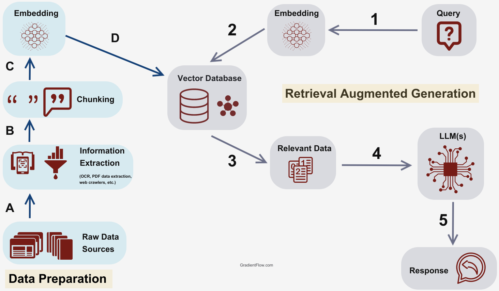
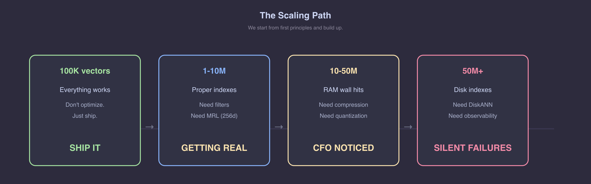

The Scaling Path




Month 1: "Let's add semantic search!"
→ 100K vectors, works great ✅
Month 4: "Scale to all our docs"
→ 10M vectors, still fine ✅
Month 8: "Enterprise rollout"
→ 100M vectors, RAM bill explodes 💸
Month 9: "Add per-tenant filtering"
→ recall silently drops to 40% 🔇
Month 10: "Maybe we need a separate vector DB?"
→ now syncing two databases forever 🔄
Same pattern. Same order. Every team.
This talk: the math, the tools, and the decisions — in plain English.

Computers don't understand words.
"I love fries" vs "Fries are great"
🧑 Human → instantly similar.
💻 Computer → two different strings.
The fix: turn text into numbers that capture meaning.
"I love fries" → [0.2, 0.8, 0.1, ...] 384 numbers "Fries are great" → [0.3, 0.7, 0.2, ...] 384 numbers "The sky is blue" → [0.9, 0.1, 0.8, ...] 384 numbers
Similar meanings → similar numbers.
That's an embedding. A GPS coordinate for meaning — close meanings, close numbers.

Distance between two points — already familiar:
Point A = (x₁, y₁) Point B = (x₂, y₂) Distance = √((x₂-x₁)² + (y₂-y₁)²)

Same idea, just more dimensions:
Vector A = [0.2, 0.8, 0.1, ... 384 nums] Vector B = [0.3, 0.7, 0.2, ... 384 nums] Distance = √((0.3-0.2)² + (0.7-0.8)² + ...)
That's Euclidean distance. Works, but…
Everyone wants to build AI on their own data.
Leadership wants to know why the infrastructure bill just tripled.

Per vector: 1536 dims × 4 bytes = 6,144 bytes ≈ 6 KB
Demo used 384d (MiniLM). Production models (OpenAI, Cohere) use 1536d. This is production math.
| Scale | Raw Vectors | + HNSW (50%) | Approx. RAM Cost |
|---|---|---|---|
| 1M | 6 GB | ~9 GB | ~$50/mo |
| 10M | 61 GB | ~92 GB | ~$500/mo |
| 100M | 614 GB | ~920 GB | ~$5,000+/mo |
| 1B | 6.1 TB | ~9.2 TB | 💀 |
64 GB → 920 GB = not 15x cost, it's 30-50x operational complexity.

1. "Just use HNSW" → 750 GB RAM → $5K/mo 💸
2. "Add a separate vector DB" → two systems to sync forever 🔄
3. "We'll optimize later" → index rebuild = 3 days, no deploys 🧊
Not bad tools — premature decisions made without doing the math.

| Method | Size (1M) | Recall@10 |
|---|---|---|
| FP32 (baseline) | 6.1 GB | 100% |
| Binary (1-bit) | 192 MB | ~10% |
| Binary + rerank | 192 MB | ~92-96% |
32× smaller. Still finds the right answers.
Recall is optimistic at small scale. At 1M+ vectors, expect ~92-96% with rerank.
SELECT * FROM products WHERE tenant_id = 42 ORDER BY embedding <=> query LIMIT 10;
⚠️ HNSW returns 10 nearest vectors.
Filter throws 9 away.
Asked for 10. Got 0.
No error. No warning. No log line.